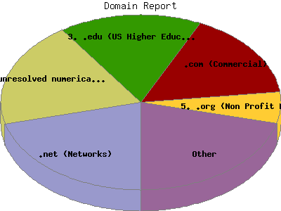

Report generated by Analog 5.91beta1 and Report Magic 2.21
|
Web Server Statistics for "Harish Narayanan (hnarayan) - January 2005" Report generated by Analog 5.91beta1 and Report Magic 2.21 |
The Domain Report identifies the top origins of visitors to this site. This is determined by the suffix of their domain name. Use this information carefully as this is based on where their domain name is registered and may not always be an accurate identifier of the actual geographic location of this visitor. For example, while most .com domain names are from the United States, there are a growing number of .com domain names that exist outside the United States.
This report shows all results. This report is sorted by number of requests.

| Domain Name | Number of requests | Number of bytes transferred | Percentage of the bytes | Percentage of the requests | |
|---|---|---|---|---|---|
| 1. | .net (Networks) | 1,388 | 57.489 MB | 13.69% | 20.93% |
| 2. | [unresolved numerical addresses] | 1,297 | 56.661 MB | 13.49% | 19.56% |
| 3. | .edu (US Higher Education) | 1,100 | 61.296 MB | 14.59% | 16.59% |
| umich.edu | 704 | 38.962 MB | 9.28% | 10.62% | |
| engin.umich.edu | 472 | 32.639 MB | 7.77% | 7.12% | |
| ummu.umich.edu | 34 | 3.569 MB | 0.85% | 0.51% | |
| purdue.edu | 30 | 4.886 MB | 1.16% | 0.45% | |
| oregonstate.edu | 29 | 4.016 MB | 0.96% | 0.44% | |
| 4. | .com (Commercial) | 1,070 | 47.132 MB | 11.22% | 16.13% |
| 5. | .org (Non Profit Making Organizations) | 375 | 140.019 MB | 33.34% | 5.65% |
| 6. | .br (Brazil) | 175 | 5.012 MB | 1.19% | 2.64% |
| 7. | .de (Germany) | 155 | 4.058 MB | 0.97% | 2.34% |
| 8. | .ca (Canada) | 151 | 4.152 MB | 0.99% | 2.28% |
| 9. | .jp (Japan) | 147 | 1.781 MB | 0.42% | 2.22% |
| 10. | .it (Italy) | 107 | 9.195 MB | 2.19% | 1.61% |
| 11. | .fr (France) | 95 | 1.824 MB | 0.43% | 1.43% |
| 12. | .nl (Netherlands) | 85 | 1.951 MB | 0.46% | 1.28% |
| 13. | .in (India) | 48 | 1.099 MB | 0.26% | 0.72% |
| 14. | .uk (United Kingdom) | 46 | 5.309 MB | 1.26% | 0.69% |
| 15. | .us (United States) | 37 | 1,014.896 KB | 0.24% | 0.56% |
| 16. | .se (Sweden) | 32 | 8.829 MB | 2.10% | 0.48% |
| 17. | .fi (Finland) | 30 | 553.087 KB | 0.13% | 0.45% |
| 18. | .ch (Switzerland) | 29 | 1.010 MB | 0.24% | 0.44% |
| 19. | .at (Austria) | 25 | 232.910 KB | 0.05% | 0.38% |
| 20. | .au (Australia) | 24 | 178.683 KB | 0.04% | 0.36% |
| 21. | .cz (Czech Republic) | 24 | 2.811 MB | 0.67% | 0.36% |
| 22. | .hr (Croatia) | 21 | 571.630 KB | 0.13% | 0.32% |
| 23. | .il (Israel) | 18 | 172.351 KB | 0.04% | 0.27% |
| 24. | .hu (Hungary) | 16 | 598.792 KB | 0.14% | 0.24% |
| 25. | .mx (Mexico) | 14 | 762.071 KB | 0.18% | 0.21% |
| 26. | .pt (Portugal) | 14 | 208.311 KB | 0.05% | 0.21% |
| 27. | .tr (Turkey) | 14 | 618.898 KB | 0.14% | 0.21% |
| 28. | .hn (Honduras) | 12 | 489.291 KB | 0.11% | 0.18% |
| 29. | .nz (New Zealand) | 12 | 590.450 KB | 0.14% | 0.18% |
| 30. | .gt (Guatemala) | 12 | 756.840 KB | 0.18% | 0.18% |
| 31. | .pl (Poland) | 11 | 442.127 KB | 0.10% | 0.17% |
| 32. | .be (Belgium) | 6 | 47.416 KB | 0.01% | 0.09% |
| 33. | .gr (Greece) | 6 | 830.694 KB | 0.19% | 0.09% |
| 34. | [unknown domain] | 4 | 55.691 KB | 0.01% | 0.06% |
| 35. | .za (South Africa) | 4 | 327.322 KB | 0.08% | 0.06% |
| 36. | .gov (US Government) | 4 | 327.311 KB | 0.08% | 0.06% |
| 37. | .dk (Denmark) | 3 | 345.249 KB | 0.08% | 0.04% |
| 38. | .th (Thailand) | 3 | 16.033 KB | 0.00% | 0.04% |
| 39. | .ro (Romania) | 3 | 67.957 KB | 0.02% | 0.04% |
| 40. | .tw (Taiwan) | 3 | 758.625 KB | 0.18% | 0.04% |
| 41. | .eg (Egypt) | 3 | 118.396 KB | 0.03% | 0.04% |
| 42. | .id (Indonesia) | 3 | 64.642 KB | 0.01% | 0.04% |
| 43. | .es (Spain) | 2 | 480.084 KB | 0.11% | 0.03% |
| 44. | .cy (Cyprus) | 2 | 9.105 KB | 0.00% | 0.03% |
| 45. | .my (Malaysia) | 1 | 6.387 KB | 0.00% | 0.01% |
| 46. | .no (Norway) | 1 | 6.296 KB | 0.00% | 0.01% |
This report was generated on February 1, 2005 19:38.
Report time frame January 1, 2005 00:39 to January 31, 2005 23:55.
| Web statistics report produced by: | |
 Analog 5.91beta1 Analog 5.91beta1 |  Report Magic 2.21 Report Magic 2.21 |